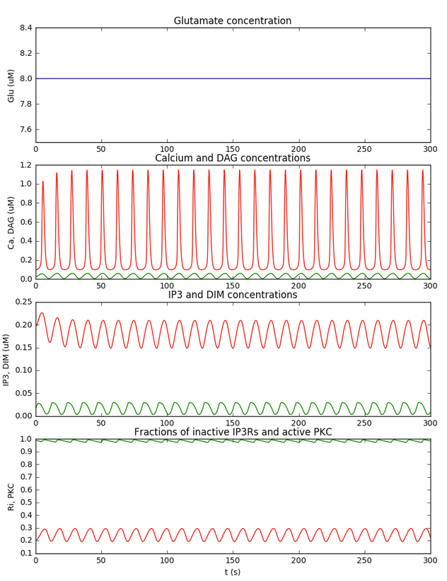

This is the readme for the model for the papers: 1. Dupont G, Lokenye EF, Challiss RA (2011) A model for Ca2+ oscillations stimulated by the type 5 metabotropic glutamate receptor: an unusual mechanism based on repetitive, reversible phosphorylation of the receptor. Biochimie 93:2132-8 2. Manninen T, Havela R, Linne ML (2017) Reproducibility and comparability of computational models for astrocyte calcium excitability Front. Neuroinform. This jupyter notebook was contributed by Dr T Manninen. We tested the reproducibility and comparability of four astrocyte models (Manninen, Havela, Linne, 2017). Model by Dupont et al. (2011) was one of them, but we had to modify the model to get more similar results as in the original publication. We implemented and ran the modified model using Jupyter Notebook. Model code produces results of Figure 1 and Figures 3-5 in Manninen, Havela, Linne (2017). The third group of graphs in the python notebook correspond to Figure 2 in Dupont et al 2011 and Figure 1 right column in Manninen et al 2017: 